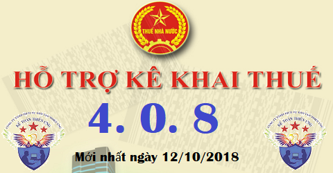

Phần mềm hỗ trợ kê khai thuế 4.0.8 và 3.8.7, đây là phần mềm HTKK mới nhất ngày 12/10/2018 của Tổng cục thuế. Tải phần mềm HTKK 4.0.8 và 3.8.7 tại đây.
Thông báo về việc Nâng cấp ứng dụng Hỗ trợ kê khai (HTKK) theo kiến trúc và công nghệ mới phiên bản 4.0.8
TỔNG CỤC THUẾ THÔNG BÁO
V/v: Triển khai ứng dụng Hỗ trợ kê khai (HTKK) theo kiến trúc mới và công nghệ mới phiên bản 4.0.8 đáp ứng Quyết định số 1686/QĐ-BTC ngày 25/09/2018 của
Bộ trưởng Bộ Tài chính
V/v: Triển khai ứng dụng Hỗ trợ kê khai (HTKK) theo kiến trúc mới và công nghệ mới phiên bản 4.0.8 đáp ứng Quyết định số 1686/QĐ-BTC ngày 25/09/2018 của
Bộ trưởng Bộ Tài chính
Tổng cục Thuế thông báo triển khai ứng dụng HTKK theo kiến trúc và công nghệ mới phiên bản 4.0.8 đáp ứng việc hợp nhất Chi cục Thuế trực thuộc Cục Thuế tỉnh Quảng Ninh theo Quyết định số 1686/QĐ-BTC ngày 25/09/2018 của Bộ trưởng Bộ Tài chính đồng thời cập nhật một số lỗi/yêu cầu nghiệp vụ phát sinh khi triển khai phiên bản 4.0.7 như sau:
- Cập nhật tên các Chi cục Thuế trực thuộc Cục Thuế tỉnh Quảng Ninh trong danh mục cơ quan thuế của các chức năng liên quan trên ứng dụng, cụ thể:
| STT |
Tên cơ quan thuế trước khi sáp nhập |
Tên cơ quan thuế sau khi sáp nhập |
|---|---|---|
| 1 | Chi cục Thuế thành phố Uông Bí | Thành phố Uông Bí - Chi cục Thuế khu vực Uông Bí - Quảng Yên |
| 2 | Chi cục Thuế thị xã Quảng Yên | Thị xã Quảng Yên - Chi cục Thuế khu vực Uông Bí - Quảng Yên |
| 3 | Chi cục Thuế huyện Tiên Yên | Huyện Tiên Yên - Chi cục Thuế khu vực Tiên Yên - Bình Liêu - Ba Chẽ |
| 4 | Chi cục Thuế huyện Bình Liêu | Huyện Bình Liêu - Chi cục Thuế khu vực Tiên Yên - Bình Liêu - Ba Chẽ |
| 5 | Chi cục Thuế huyện Ba Chẽ | Huyện Ba Chẽ - Chi cục Thuế khu vực Tiên Yên - Bình Liêu - Ba Chẽ |
| 6 | Chi cục Thuế huyện Hải Hà | Huyện Hải Hà - Chi cục Thuế khu vực Hải Hà - Đầm Hà |
| 7 | Chi cục Thuế huyện Đầm Hà | Huyện Đầm Hà - Chi cục Thuế khu vực Hải Hà - Đầm Hà |
- Nâng cấp một số chức năng ứng dụng:
+ Cập nhật danh mục địa bàn hành chính: Đổi tên huyện Tân Thành thành thị xã Phú Mỹ - tỉnh Bà Rịa - Vũng Tàu.
+ Kê khai tờ khai thuế TNCN (dành cho cá nhân cư trú và cá nhân không cư trú khai thuế trực tiếp với cơ quan thuế) mẫu 02/KK-TNCN: Cập nhật định dạng số nguyên đối với chỉ tiêu [31] khi đưa vào mã vạch trên tờ khai.
+ Lập Giấy đề nghị hoàn trả khoản thu ngân sách nhà nước 01/ĐNHT: Cập nhật định dạng một số chỉ tiêu liên quan đến kỳ tính thuế đề nghị hoàn, kỳ nộp hồ sơ hoàn khi kết xuất tờ khai ra file XML gửi qua hệ thống Khai thuế qua mạng (iHTKK) hoặc Thuế điện tử (eTax) phục vụ trả trạng thái hồ sơ khai thuế
------------------------------------------------------------------------------
Bắt đầu từ ngày 15/10/2018, khi lập hồ sơ khai thuế, tổ chức, cá nhân nộp trên phạm vi toàn quốc sẽ sử dụng ứng dụng HTKK 4.0.8 để kê khai thay cho các phiên bản trước đây.Tải phần mềm HTKK 4.0.8 về tại đây:

------------------------------------------------------------------------------
Để cài đặt được HTKK 4.0.8, máy tính của NNT cần đáp ứng thông số sau:
- Hệ điều hành WinXP (SP2, SP3), Win 7 trở lên… (không hỗ trợ hệ điều hành iOS, Mac).
- Máy tính có cài .NET Framework 3.5 trở lên (có thể tải bộ cài .NET Framework 3.5 tại đây).
- Nếu máy tính sử dụng hệ điều hành Win 7 trở lên không phải cài đặt .NET Framework 3.5 mà chỉ cần kích hoạt .NET Framework 3.5 đã tích hợp sẵn theo tài liệu hướng dẫn cài đặt tại đây
- Hệ điều hành WinXP (SP2, SP3), Win 7 trở lên… (không hỗ trợ hệ điều hành iOS, Mac).
- Máy tính có cài .NET Framework 3.5 trở lên (có thể tải bộ cài .NET Framework 3.5 tại đây).
- Nếu máy tính sử dụng hệ điều hành Win 7 trở lên không phải cài đặt .NET Framework 3.5 mà chỉ cần kích hoạt .NET Framework 3.5 đã tích hợp sẵn theo tài liệu hướng dẫn cài đặt tại đây
--------------------------------------------------------------------------------------------
Lưu ý: Trường hợp bất khả kháng, tổ chức, cá nhân vẫn đang sử dụng ứng dụng HTKK phiên bản 3.8.6 trở về trước mà chưa có điều kiện nâng cấp lên ứng dụng HTKK theo kiến trúc mới phiên bản 4.0.8 thì có thể tải bộ cài ứng dụng HTKK phiên bản 3.8.7 (đã nâng cấp các nội dung trên) để kê khai.Tải phần mềm hỗ trợ kê khai HTKK 3.8.7: Tải về
-------------------------------------------------------------------------
Kế toán Diệu Tâm chúc các bạn thành công.
